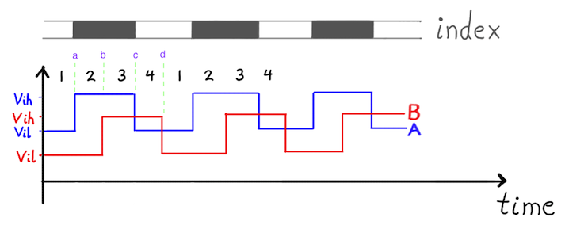
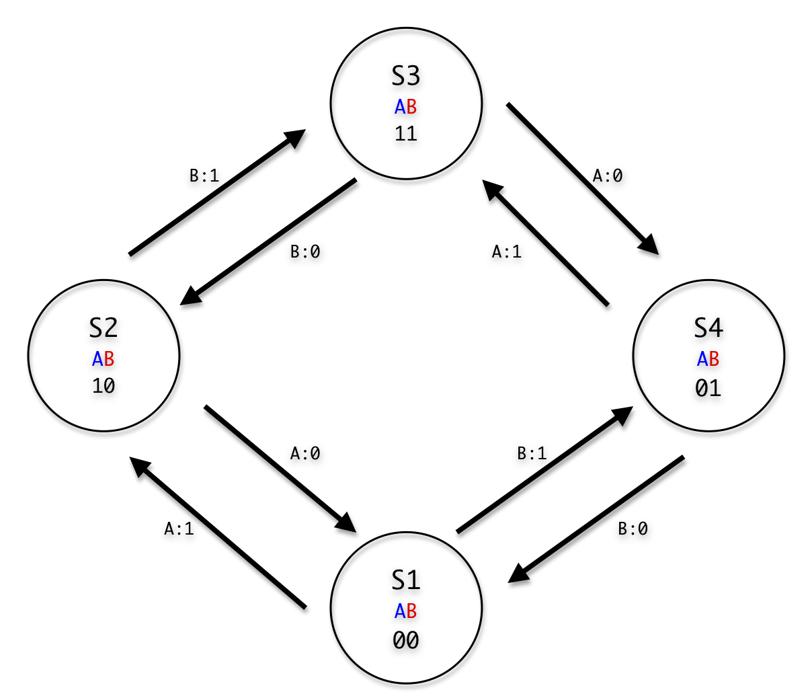

Perhaps after controlling a few DC motors, you may be wondering if you can get a bit more precision. For instance, what if I wanted my robot to drive forward exactly 10.0 [ft]? With a typical DC motor, all we can really do is make a good guess. With encoders, however, we can do better! We can introduce--feedback!
Today, we'll be examining (two-channel) optical encoders in more detail, and I'll guide you through the process of decrypting their output signals. Encoders can give us priceless information: they can tell us what angle the connected shaft is oriented. From that info, we could backtrack angular velocity and acceleration! But there's a price. Unlike most other sensors, where we can just poll the sensor at any time, we always have to keep track of the encoder to see if it's changed angle.
Here's a quick example on the difference between reading a typical sensor and reading an encoder. A simple light sensor responds by changing it's resistance depending on how bright it is. No matter when we sample it, it will give us the light reading at the time of measurement. On the other hand, an encoder, just spits out two pulses every time it changes it's angle by a small increment. In other words, to deduce our overall angle, we have to sit there and "babysit" the encoder, keeping track of every new pulse we see since we've started.
Let's take a look at the guts of the two-channel optical encoder. Inside the encoder is a small disk with tiny slits. This disk connects directly to your rotating shaft. At the bottom of the encoder is a fixture that holds an LED and two light sensors that connect to the encoder's pinouts: channels A and B. The disk rotates through this fixture freely, and every time a slit passes the light sensors, the light beams break, and the voltage from these signals drop.
It turns out that the way these two light sensors are spaced apart inside the fixture produces a two very specific outputs. if we look at the signals produced from these two internal light-sensors as we rotate the disk, we'll find that one waveform is halfway "out of phase" with the other. Here's a quick pic:
If we measure both channels at the same time, we can see four distinct transitions on the signals above.
Channel A: Channel B:
Case a: Low-->High Low
Case b: High Low-->High
Case c: High-->Low Low
Case d: Low High-->Low
n other words, there are really only 4 possible modes (or states!) that occur in a
repeating pattern over and over. In the next section, we put all of these states
into a finite state machine:
In the following finite state machine diagram, each state is represented by a circle, and the transitions in and out of that state are triggered by the what happens to channel A or B (printed above the arrow). This abstract FSM is exactly what we want to put into the software that decodes the signals. At this point, if you're staring at a strange-looking FSM diagram and wondering how to code it up--Have no fear! Once we've created the FSM diagram, we've actually already laid out most of the code structure!
To decrypt and interpret our rotary encoder, we'll be using an Arduino. On the software level, we'll want to call on Interrupts, so that we can watch for changes from the encoder essentially at any time they might happen. Using an interrupt essentially means that the Arduino will stop whatever it was doing at the moment, handle a quick task to keep track of the encoder's new angle, and then go back to whatever it was doing originally.
